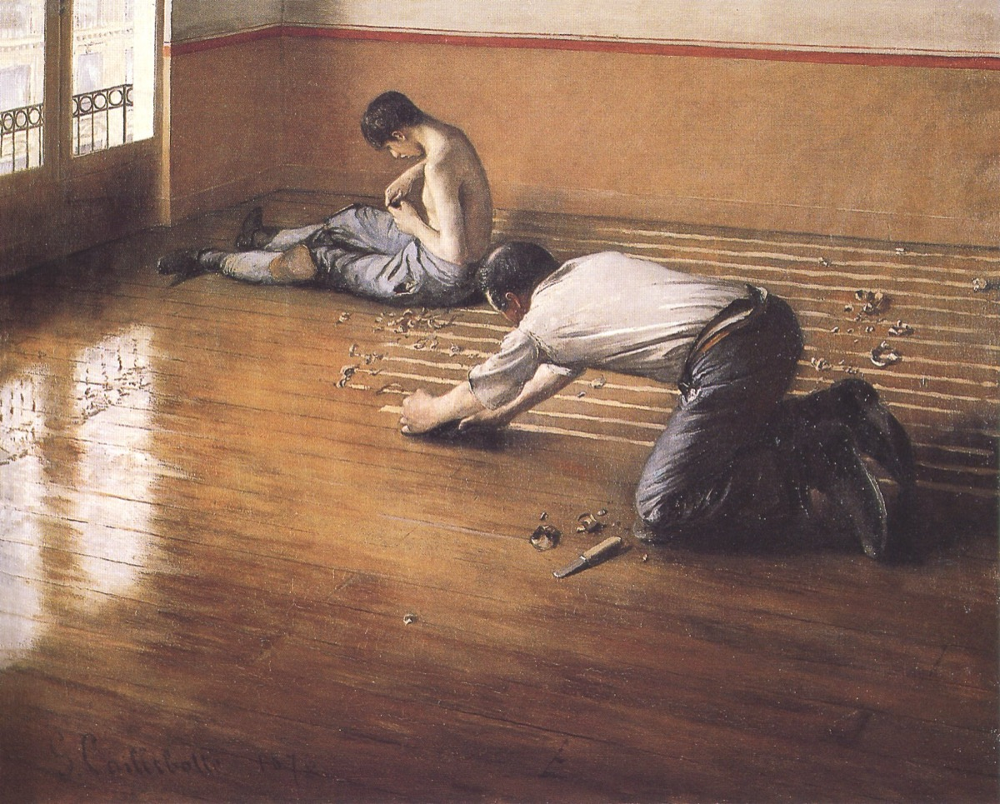

“All our life, so far as it has definite form, is but a mass of habits.”William James, The Principles of Psychology (1890)
Try to remember whether you locked the front door this morning. For most readers, the answer arrives the way it always does: I think so. Probably. I always do. Now try to remember whether you washed your hair, or only your body, in the shower. Again the same fog. You can produce, with effort, an approximate reconstruction; what you cannot do is remember the act itself in the way you remember writing your name on this morning’s form or pouring the coffee that you were paying attention to. The acts happened. You were present for them. They did not, on any inspection by you, register as experiences. This is not because there is anything wrong with you. It is because almost half of what an adult human being does in a day, by the careful measurement of behavioural research, is done by a different system inside the same skull — a system that does not ask consent, leaves no diary, and is, on the deeper telling of this chapter, the substance of the person you have become.1
That system is the topic. Modern psychology calls it habit. The ancients called it hexis, or second nature, and they considered it — with reason — to be a more reliable description of a character than its intentions, its declarations, or its moods on the days you happened to interview it. We will spend the chapter showing what habit is, how it is produced, where it lives in the brain, and what it means for the question of who any of us actually are. The hardest finding to assimilate, and the one we will hold up at the end, is that the habits we have laid down over the years of a life are not something the person has. They are, in a quite precise sense, what the person is.
The chapter has a second piece of useful work to do. The science of habit has, in the last twenty years, become one of the best-funded and most actively translated areas of behavioural research, and a small library of popular books — Duhigg, Clear, Wood, Fogg — have rendered the research as a set of practical levers for changing what one does. The levers work, within their range. We will explain them. We will also explain why they work, which is sometimes lost in the rendering: not because human beings are willpower-driven optimisers waiting to discover the right system, but because we are creatures whose nervous systems have a particular learning rule, and the levers exploit that rule. The levers are the rule, made operational.
The habits we have laid down over the years of a life are not something the person has. They are, in a quite precise sense, what the person is.
The Founding IdeaAristotle’s Hexis and James’s Chapter

The first sustained philosophical treatment of habit is the second book of Aristotle’s Nicomachean Ethics, written around 340 BCE. Aristotle had asked, with characteristic patience, what kind of thing a virtue is. The answer he reached was that virtues are hexeis — a word usually translated as “habits” or “settled dispositions” — produced not by single noble acts but by long courses of repeated action. A man is just, Aristotle said, not because he has decided in some inner chamber to be just, but because he has, over years of small choices, become a person whose default response to a situation calling for justice is the just response. Justice, for him, is not in the deliberation. It is in the disposition the deliberation has, over time, produced.2
This is a strikingly modern view. It says that what you are is the long sediment of what you have done; that character is the residue of repetition; and — the corollary — that you cannot, by any single act of will, become a different kind of person, but you can, by changing what you do habitually, become one over time. Aristotle’s recommendation, accordingly, was always practical. The young man who wants to become brave should not contemplate his future bravery; he should put himself, daily, in small situations where he must act bravely, and trust the long accumulation. The mature person is not the one who chose virtue this morning. The mature person is the one for whom the choice has, by long repetition, fallen below the threshold at which choice is required.
The same insight was reformulated, with no apparent debt to Aristotle but with brilliant freshness, by William James in 1890. James gave habit a whole chapter of The Principles of Psychology, the founding textbook of American psychology, and his treatment is still one of the best things in the field. James began with the physical fact: that the nervous system, like a path through a field, is more easily traversed each time it is traversed, so that the act done many times costs less metabolic effort and less attention than the same act done for the first time. From this single observation he drew the broad practical case for “making our nervous system our ally instead of our enemy” — the case for laying down, deliberately, the habits one wishes to live with, in the years when the path is being cut.3
James offered, in that chapter, a small piece of advice we have not improved on. Seize the very first possible opportunity to act on every resolution you make. The action does not have to be impressive; it has to happen quickly, so that the path begins to be cut. A resolution made on a Sunday and not acted on for a week is, by the following Sunday, a resolution that the nervous system has not registered, and that has therefore not, in any biological sense, been made at all. This is one of those pieces of pragmatic wisdom that the modern habit literature has rediscovered as “starting small” or “the two-minute rule.” James said it first and said it better in 1890.
Where It Lives in the BrainThe Basal Ganglia and the Habit Loop
The biology of habit is, by current standards, one of the better-mapped areas of the brain. Habit lives, mostly, in a small set of structures buried deep below the cortex called the basal ganglia — a Latin name for a Greek idea, the “deep knots” of grey matter, including the striatum (caudate and putamen), the globus pallidus, the substantia nigra, and the subthalamic nucleus. Of these, the dorsolateral striatum is the structure most centrally involved in habit formation in mammals. Patients with degeneration of these structures — the population most familiar to neurology as Parkinson’s disease and Huntington’s disease — experience, in addition to their better-known motor symptoms, a measurable degradation of habit performance: they have to think, painfully and step-by-step, through actions that other adults perform without notice.4
The single most important empirical finding from the modern study of habit is the work of Ann Graybiel at MIT, who tracked the firing patterns of neurons in the striatum of rats learning to run a simple maze for a reward. What she found, with extraordinary consistency, has changed our understanding of what habit is. Early in learning, while the rat was working out the maze, the striatum fired continuously throughout the run — the neural correlate of effortful attention. After many repetitions, the firing pattern chunked: the striatum became active in a strong burst at the start of the run (the cue) and another strong burst at the end (the reward), with the middle of the run going relatively silent. The neural representation of the action had been compressed into a unit that the brain now treated as a single thing: at the cue, execute the chunk; at the chunk’s end, expect the reward.5
This finding has a name now — chunking, or habit consolidation — and it gives the biological grounding for the popular framework Charles Duhigg made famous in The Power of Habit (2012). Every habit, on this account, has three parts. The cue is the trigger — a time, a place, an emotional state, a person, a preceding action. The routine is the chunked action itself. The reward is what the routine reliably produces, which trains the brain to repeat the chunk the next time the cue appears. Three parts; one loop; running invisibly underneath the daily life of every adult thousands of times a day.6
The habit loop — the three-part structure underneath every habituated behaviour: a cue (the trigger), a routine (the chunked action that follows automatically), and a reward (the consequence that trains the brain to repeat the loop next time the cue appears). The popular version comes from Duhigg; the neural picture comes from Graybiel.
What gives the habit loop its enormous power is the chunking itself. Once a sequence has been chunked, the cortex — the deliberate, thinking part of the brain we treated in Chapter Two as System 2 — is largely not consulted during execution. You do not think about how to brush your teeth; the basal ganglia execute the chunk while your cortex, freed from the work, drifts to whatever you were going to think about next. This is, by a long margin, the most efficient arrangement evolution ever produced. It is also why your habits, both the ones you are proud of and the ones you are not, run with so little resistance: they are running on a parallel system that does not, in any normal sense, ask you for permission.
How Much Of Life Is Habit?The Forty-Three-Percent Number
The most-cited measurement of the share of human daily life that is habitual rather than deliberate comes from Wendy Wood’s research at the University of Southern California. Wood’s subjects logged their daily behaviours at intervals; the activities were then coded for whether they were performed in the same way, at the same time, in the same place — that is, whether they were habits in the technical sense. The headline figure from her studies, repeated across populations, is that roughly 43 per cent of daily behaviour is habitual in this strict sense.7
The figure deserves a careful gloss. It does not mean that 43 per cent of your life is mindless. The habitual behaviours include many things you would, on inspection, want to be habitual: brushing your teeth, driving the familiar route home, making the morning coffee, the comforting sequence of evening rituals that ends in sleep. Habit, properly understood, is not the enemy of agency. It is the precondition of it. A person who had to think, freshly, about every step of getting out of bed would not, in fact, have the cognitive bandwidth left over to think about anything else. The deliberate, attentional life happens on a substrate of habituated action that frees the cortex for the few things genuinely worth its attention.
What the figure does say, sobering once you sit with it, is that the central question of practical psychology is not which decisions you should make, since on the order of half of your day will not, in fact, involve decisions at all. The central question is which habits you should install, since those are the things that, on the data, are doing the work. Aristotle was right. The young man who wants to be brave should not deliberate his way to bravery. He should arrange his days, deliberately, around the small repeated acts that will, over years, lay down a brave default. James was right. The first hour after a resolution is the hour the resolution either becomes biology or vanishes. The data has now, painstakingly, confirmed what both could have told us, without any of the instruments, three thousand and a hundred and thirty years ago respectively.
The Same Machinery, HijackedHabit and Addiction
The same basal-ganglia circuitry that lets you brush your teeth without thinking is what makes addiction so brutally hard to break. Addiction is, on the modern neurobiological account, a habit loop running on a routine whose reward signal has been pharmacologically amplified to a level the normal habit-learning rule was never designed for. Alcohol, opioids, nicotine, cocaine, methamphetamine, and the more recent designer compounds all share, in different ways, the property of producing very large dopaminergic signals in the very circuits that read “reward” for habit-learning purposes. The brain, doing exactly what it was built to do, lays down the cue-routine-reward chunk much faster and much more durably than it does for ordinary behaviours, and the resulting habit becomes one of the most thoroughly consolidated behavioural patterns the system can produce.8
This is not, importantly, a moral characterisation of the addict. It is a neurobiological one, and it is the basis of the broad modern shift in clinical attitudes toward addiction as a disease of brain circuitry rather than a failure of character. The addict has not decided to keep using; the chunk has, under the conditions the substance produced, been laid down deeper than the deciding self’s ordinary tools can reach. This is also why the most effective treatments for addiction are, on the careful evidence, not the ones that demand will-power against the urge but the ones that change the conditions under which the cues fire: removing the drinker from the bar, the smoker from the company of smokers, the gambler from the casino. You cannot reliably refuse the chunk while standing in front of the cue. You can reliably stand somewhere else.9
The same finding generalises. The patient trying to lose weight who keeps the snack on the counter; the writer trying to finish the chapter with the phone next to the laptop; the person trying to quit drinking who keeps the wine in the kitchen — each is, in the technical sense, attempting to refuse the chunk in the presence of its cue, and each is therefore betting against the way the basal ganglia were designed. The most reliable behaviour change in any of these domains comes not from greater resolve in the moment but from earlier-stage environmental redesign: getting the cue out of the cue’s usual place, before the moment it would have fired. This is, structurally, the same advice we have given in every previous chapter of this volume. Design the conditions before the willpower is needed. The basal ganglia are not your enemy; they are doing what they were built to do; what changes is the world in which they do it.
The Objection That Matters“If Habit Runs Me, Am I an Automaton?”
The honest reader, by now, may feel the weight of an uncomfortable thought. If half of what I do is on autopilot, and the autopilot was laid down by what I happened to do in the years when I was not paying enough attention, and changing the autopilot is harder than ordinary deliberation can reach, in what sense am I making the choices I think I’m making? Am I anything more than the sum of the chunks the basal ganglia happen to be running?
The honest answer has two parts, and they together rescue agency without pretending the chunk-running half of you is something it is not.
The first part is that the deliberate self does, in fact, have a particular and important power: the power to design the conditions under which the chunks will be laid down. You cannot, in the moment, decide what your basal ganglia will do; you can, in cooler hours, decide what you put in front of yourself. You can choose what to read, what company to keep, what hour to wake at, what to keep on the counter and what to keep out of the house. Each of these is a deliberate act now; each of them shapes the cues that your habit system will, over the next year or decade, consolidate around. The deliberate self is not the agent of every act. It is the architect of the conditions under which every act gets done. This is a smaller power than the philosophical tradition often imagined; it is also more than enough to live a life by.
The second part is Aristotle’s, and it is the harder and more beautiful thought. You are your habits, in the deepest sense the word are can carry — and what this means, properly faced, is that you should treat them with the seriousness you would treat any other definition of who you intend to be. The habit you laid down by accident, in your twenties, of staying up too late and waking too rushed, is not a quirk of your behaviour from which the “real” you is somehow separate. It is, by years of repetition, a part of who you have become. The habit you laid down, deliberately, of reading hard things slowly, of speaking gently to the people you love, of moving your body daily through the years your body would otherwise have aged faster — that habit is also part of who you have become, and it is in a precise sense the part you got to vote on. The deliberate self does not act every day; it casts a vote, in the conditions it designs, on which of its possible selves the basal ganglia will finally bring into being.
This is not, properly read, a depressing thought. It is the most freeing one psychology has to offer. You do not have to do everything important by force of will. You can build, over years, the conditions in which the right thing is also the easy one. This is the practice every mature tradition has, in its own way, recommended. The Buddhist sila; the Stoic askesis; the Benedictine rule; the modern athlete’s training plan. Each is a piece of habit architecture — a structure into which a person walks knowing that, after enough seasons, the person walking out at the other end will have become someone else. We are not, on this view, free in the act. We are free in the design.
You are not free in the act. You are free in the design.
Where It Touches Your LifeWhat the Research Actually Recommends
Across the modern literature on behaviour change — Wood, Duhigg, James Clear, B. J. Fogg — the recommendations converge on a small set of principles. None of them is exotic; all of them work because they exploit, rather than fight, the basal-ganglia learning rule.
Make the cue obvious and the routine easy. If you want to read more, put the book by the chair you sit in every evening. If you want to drink more water, fill the glass and put it on the desk where you will see it within seconds of arriving. The cue does almost all the work; willpower mostly does not.
Stack the new habit on an existing one. The reliable trigger you already have — pouring the morning coffee, sitting down at the desk, brushing your teeth — can serve as the cue for the new habit you would like to add. “After I pour the coffee, I write for ten minutes.” The new habit borrows the cue strength of the old one.
Reduce the friction for what you want to do; raise the friction for what you don’t. James’s nervous-system path principle, applied. The phone in the next room, the snack in the cupboard rather than on the counter, the running shoes laid out the night before — each is a small piece of environmental engineering that shifts the path of least resistance.
Start absurdly small. The two-minute version of the new habit (two minutes of reading; two push-ups; one page written) bypasses the resistance that the full version would have provoked, and starts cutting the path. The full version follows once the path exists. Most failed resolutions failed because they tried to lay down a six-lane highway in a single afternoon.
Be patient about extinction. A habit you no longer want does not disappear when you decide it should. It fades, slowly, with weeks to months of the cue no longer producing the routine. The first weeks are the hardest; the next ones are easier; the year-out version of you will have lost the habit if the cue is reliably removed, and not before.
None of this is a substitute for the harder work of deciding which habits are worth installing, which is not a question the research can answer for you. What the research can answer, and what it has answered, is the question of how to install them, once you have decided. The how is the basal-ganglia learning rule, made practical. Aristotle gave us the philosophy. James gave us the prescription. The modern lab gave us the mechanism. They all say the same thing.
“Are you your habits?”
An old question, made urgent by neuroscience. Six who have lived with it.
“The basal ganglia are running, by good current estimates, almost half your daily behaviour. The chunks are real; the cortex is not consulted during their execution. The interesting question is no longer whether habit is doing the work. It is what the deliberate self can still do that the chunks are not already doing.”
“Aristotle gave the right answer in 340 BCE: you are what you repeatedly do. Excellence, then, is not a single act but a habit. The neuroscience has done the field the favour of confirming that what looked like a metaphor was a description of the actual machinery.”
“The patients I see who are trying to change a hard habit — alcohol, smoking, anxiety patterns, the rumination of depression — almost universally arrive thinking the problem is their willpower. The right intervention is almost never more willpower. It is environmental redesign and replacement habits. Aristotle was the first cognitive-behavioural therapist; we have just made the manual longer.”
“Every tradition I know of has discovered the same thing: that the person you wish to become is built, over years, by the small repeated practices you commit to. The Rule of Benedict is habit architecture for monks; lectio divina is a habit; the daily sitting of zazen is a habit. The mature spiritual life is the deliberate construction of habits that the basal ganglia will, over time, render automatic.”
“Be careful with the popular habit literature. Many of its specific claims — the 21-day rule, the willpower-as-muscle thesis — have weakened or fallen under replication. The 43% figure travels well; the framework is sound; many of the specific numbers are looser than the books admit. Hold the framework with the appropriate care for what is, and what isn’t, well-established.”
“What this all means in practice is that we are responsible not for the act in the moment — in the moment the chunk does what the chunk does — but for the years in which we shaped, by what we kept around us, what the chunk would eventually be. The freedom is real. It is just much earlier than where most people look for it.”
Myth vs. RealitySetting the Record Straight
What We Like to Believe
“I make my decisions in the moment, on the strength of my values and my will. With enough resolve I can change any behaviour. The 21-day rule (or any specific number) reliably installs a new habit. My character is what I decide it should be each day.”
What the Evidence Shows
About 43% of daily behaviour, by careful measurement, is habitual rather than decided in the moment. Habits live in the basal ganglia, mostly bypass the cortex during execution, and consolidate by the cue-routine-reward learning rule. Willpower against an active cue is one of the least reliable behaviour-change strategies on record. Time-to-habituation varies enormously by behaviour (the careful estimate is roughly 18 to 254 days, with a median around 66, depending on behaviour and person). Your character is, in the deepest neurological sense, the long sediment of what you have done.
The popular habit literature has often outrun the underlying science. The famous “21 days to form a habit” figure comes from a 1960s plastic surgeon’s informal observation, not from research, and the careful Lally et al. study (2010) showed a much wider range. The willpower-as-finite-resource (“ego depletion”) framework dominant in popular books a decade ago has had a serious replication crisis, and the strongest forms of it are no longer supported. Wood’s 43% figure is robust; the broader cue-routine-reward picture is robust; the specific recommendations of the popular books are mostly defensible but worth checking against the underlying research rather than taken on the authority of any single bestseller.
The lines worth carrying out of this chapter.
- About 43 per cent of what you do each day, you do without deciding. The basal ganglia are running the chunks; the cortex is not consulted; you are not authoring the act in any moment-by-moment sense.
- You are your habits. Aristotle’s old claim that hexis is character has been confirmed, in 2026, by the careful neuroscience of habit. The long sediment of what you have done is, neurologically and morally, what you have become.
- You cannot reliably refuse the chunk while standing in front of its cue. Willpower against an active cue is one of the worst-performing behaviour-change strategies. Environmental redesign — remove the cue, add friction to the routine, raise the cost of the chunk — is what reliably works.
- You are not free in the act. You are free in the design. The deliberate self’s real power is not to decide every action; it is to arrange, in cooler hours, the conditions under which the basal ganglia will, over months and years, consolidate the next layer of who you become.
- Start absurdly small, and start now. James’s 1890 advice has not been improved on. The two-minute version of the new habit, performed today, begins to cut the path. The grand version, intended for next week, is the resolution that quietly dies.
If you keep one sentence: you do not have to be strong in the moment if you have been wise in the design — and the years in which you arrange your life are the years in which you, much more than in any single decision, decide who you finally are.
Research ReferencesSources & Notes
- ScienceWood, W., Quinn, J. M. & Kashy, D. A., “Habits in everyday life: Thought, emotion, and action,” Journal of Personality and Social Psychology (2002); Wood, W. & Neal, D. T., “A new look at habits and the habit-goal interface,” Psychological Review (2007).
- HistoryAristotle, Nicomachean Ethics, Book II, on hexis; modern translation: Bartlett & Collins (2011, University of Chicago Press).
- HistoryJames, W., The Principles of Psychology (1890), vol. I, Chapter IV (“Habit”).
- ScienceYin, H. H. & Knowlton, B. J., “The role of the basal ganglia in habit formation,” Nature Reviews Neuroscience (2006); on patients with basal-ganglia disease: Knowlton, B. J., Mangels, J. A. & Squire, L. R., “A neostriatal habit learning system in humans,” Science (1996).
- ScienceGraybiel, A. M., “Habits, rituals, and the evaluative brain,” Annual Review of Neuroscience (2008); Smith, K. S. & Graybiel, A. M., on chunking in the dorsolateral striatum.
- ReferenceDuhigg, C., The Power of Habit (2012); Wood, W., Good Habits, Bad Habits (2019); Clear, J., Atomic Habits (2018); Fogg, B. J., Tiny Habits (2019). The popular synthesis of an academic literature.
- ScienceWood, Quinn & Kashy (2002) as cited; the 43% figure is from the meta-analysis of their experience-sampling studies.
- ScienceEveritt, B. J. & Robbins, T. W., “Neural systems of reinforcement for drug addiction: from actions to habits to compulsion,” Nature Neuroscience (2005); Volkow, N. D. & Koob, G. F., on addiction as a brain disease.
- ReferenceThe cue-removal principle is the basis of well-established addiction treatments including contingency management and certain cognitive-behavioural therapies; see Marlatt, G. A. & Gordon, J. R., Relapse Prevention (1985) and subsequent work.
- DebatedThe popular “21 days” figure comes from M. Maltz, Psycho-Cybernetics (1960), a plastic surgeon’s informal observation. Lally, P. et al., “How are habits formed: Modelling habit formation in the real world,” European Journal of Social Psychology (2010), reports a median of 66 days with a range of 18 to 254. The ego-depletion / willpower-as-muscle literature has had a serious replication crisis (Hagger et al. 2016); the strongest forms of it are not supported.
Citations support the science presented; a production edition would carry full bibliographic detail and externally verified DOIs.
Going FurtherRecommended Books
Read
- Aristotle, Nicomachean Ethics, Book II
- William James, The Principles of Psychology (1890), Chapter IV
- Wendy Wood, Good Habits, Bad Habits (2019) — the careful academic synthesis
- Charles Duhigg, The Power of Habit (2012)
- James Clear, Atomic Habits (2018) — the most practical of the popular synthesis
Watch
- Ann Graybiel’s lectures on the neuroscience of habit (MIT, on YouTube)
- Wendy Wood interviews on the academic research behind the popular books